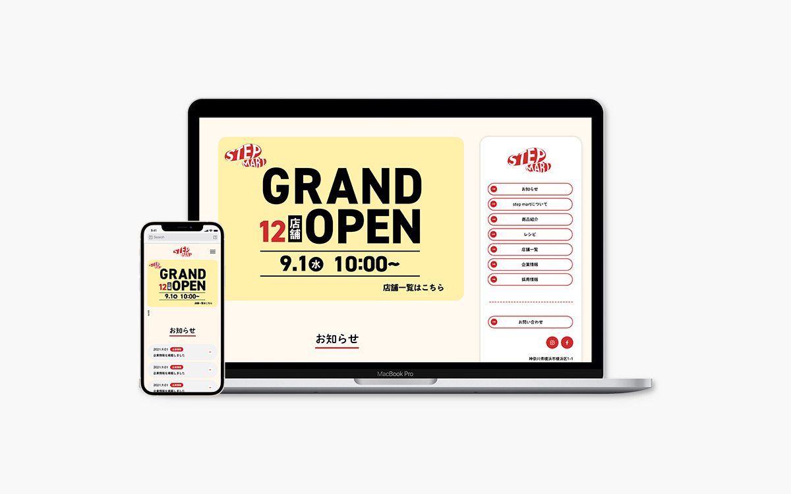
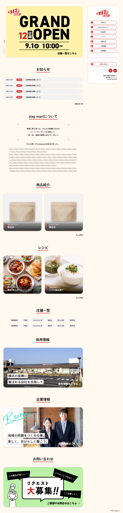
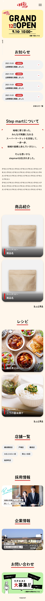

| 作品名 | stepmartサイト(架空) |
|---|---|
| 作品データ | 作品リンク |
| 制作期間 | 約1ケ月間 |
| 担当作業 | デザイン、コーディング |
| 作品説明 | 授業課題で作成しました。 レイアウトはメニューがどこにあるかわかるよう、常にサイドに表示するようにしました。色は暖かみのある暖色を使用し、柔らかさと暖かみを意識しました。 商品やレシピの部分はカードレイアウトで適度に余白を取り、きちんと情報をを読み取ってももらえるよう文字の背景をダークにするなど工夫しました。コーディングはレスポンシブ対応まで行い、どのデバイスでもきちんと見えるようにしました。 |
| 開発ツール | Illustrator,Photoshop,XD,Visual Studio Code |
| 使用言語 | HTML,CSS,Sass,jQuery |
トップページ（PC）
トップページ（SP）
